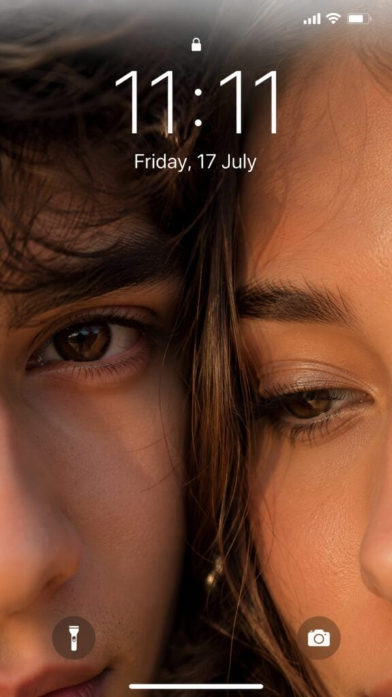
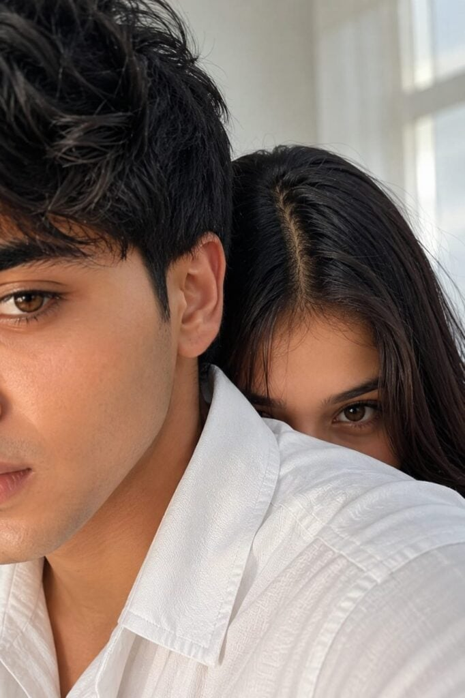
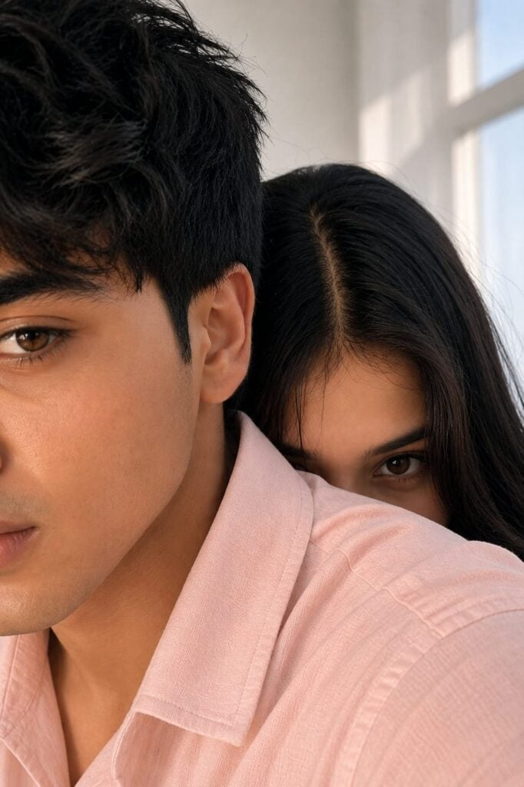
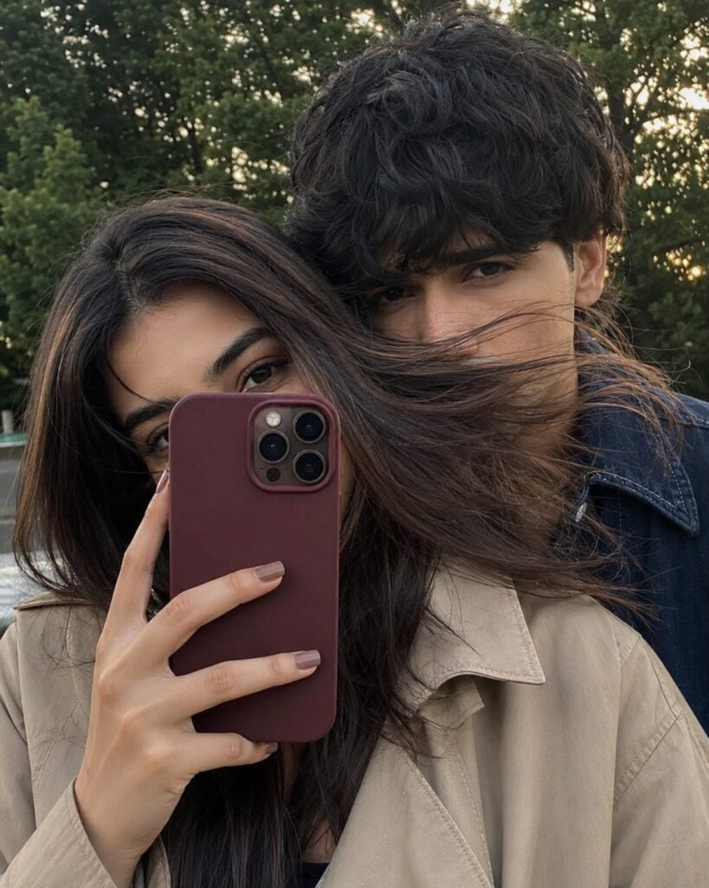
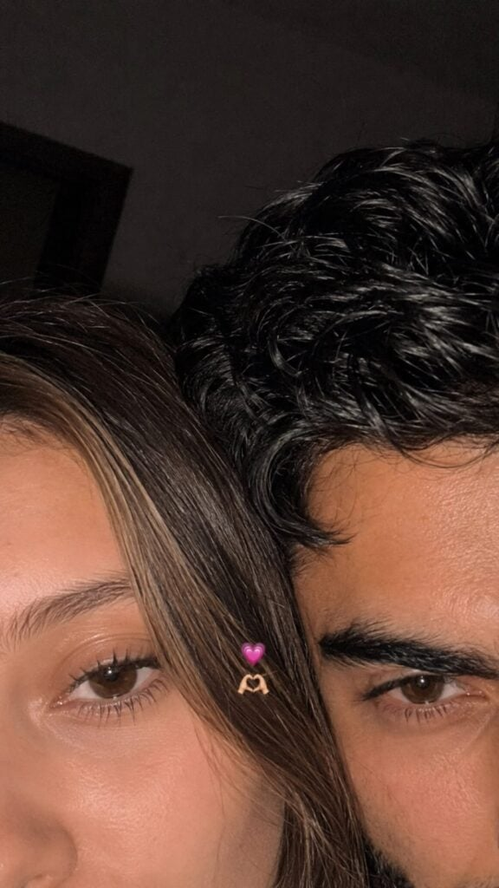
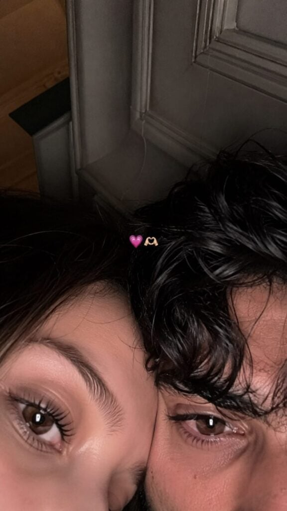

Aesthetic Couples Eyes Photo Prompt is one of the latest AI photo editing trends on Instagram, TikTok, and Pinterest. This style creates a close-up selfie that focuses only on the eyes, making the photo look romantic, natural, and highly realistic.
With the right AI prompt, you can generate a beautiful couple eyes photo that looks like it was taken with a real iPhone camera. The final result includes soft lighting, natural skin details, and a cozy aesthetic that makes the image perfect for social media.
Whether you are a beginner or an AI photo editing enthusiast, this prompt will help you create a viral and eye-catching couple eyes photo in just a few clicks.
Want more awesome prompts?
Join our community and get the latest viral prompts daily.
Follow on Instagram





The Aesthetic Couples Eyes Photo Prompt is a simple way to create realistic and trending AI photos without advanced editing skills. Just use the prompt with your favorite AI image generator and enjoy professional-looking results.
Feel free to customize the prompt by changing the lighting, emojis, expressions, or camera style to match your personal aesthetic. Small changes can make your photo look even more unique.
If you enjoy AI photo editing prompts like this, bookmark this page and check back for more trending, high-quality prompts to create stunning images for Instagram, WhatsApp, and other social media platforms.